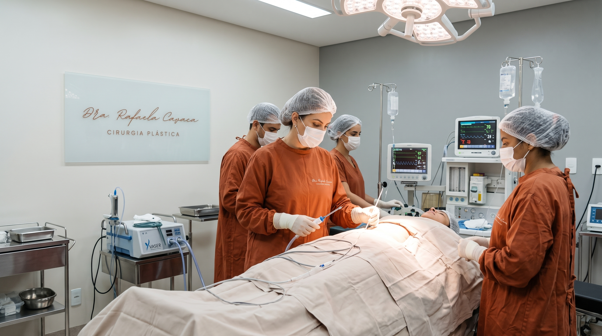
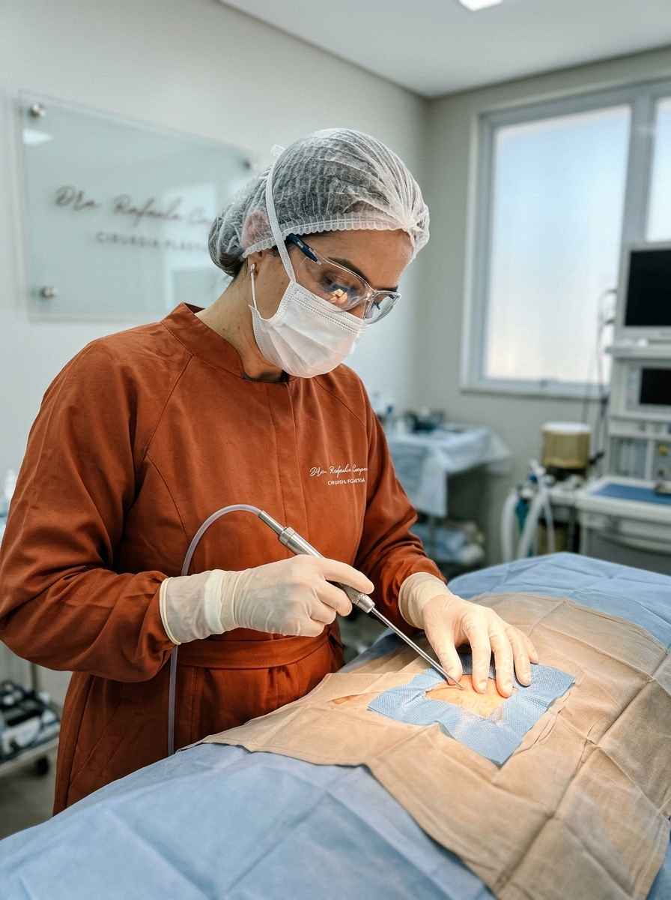
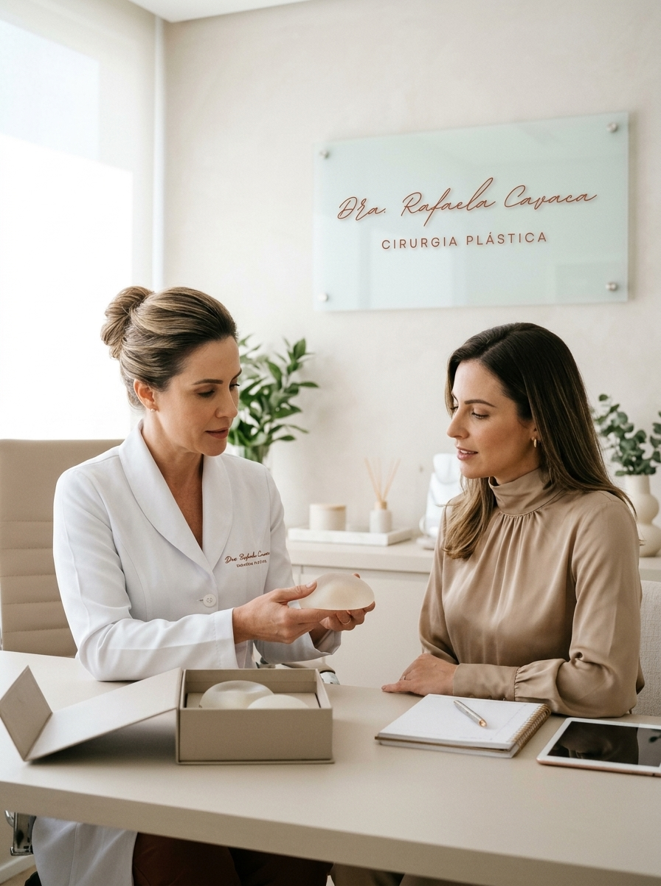
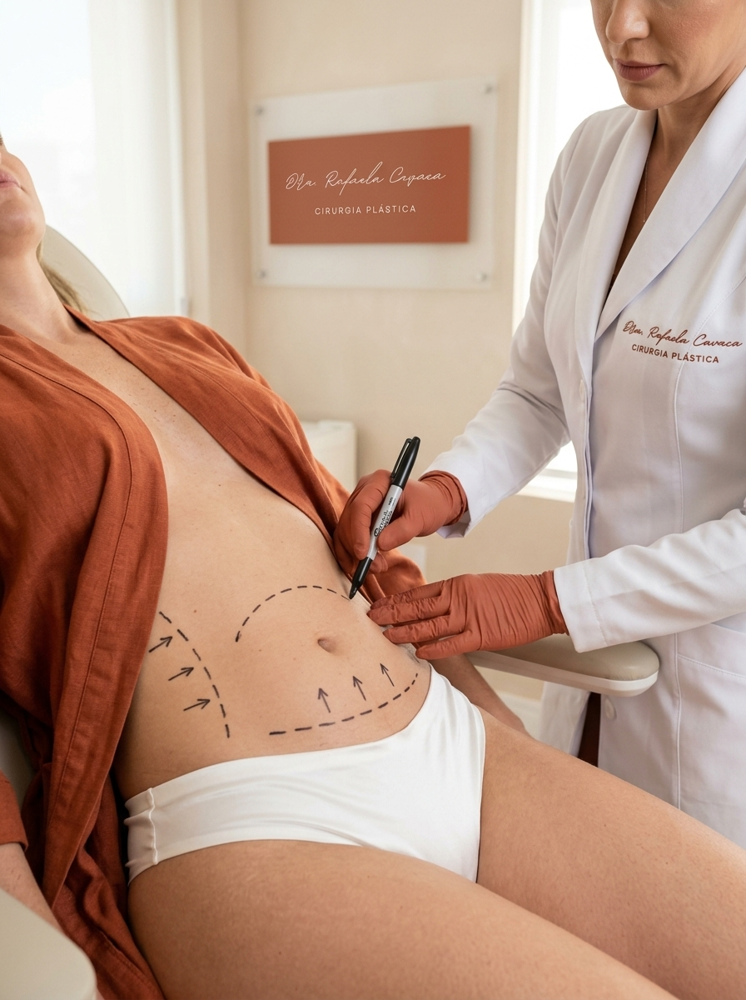
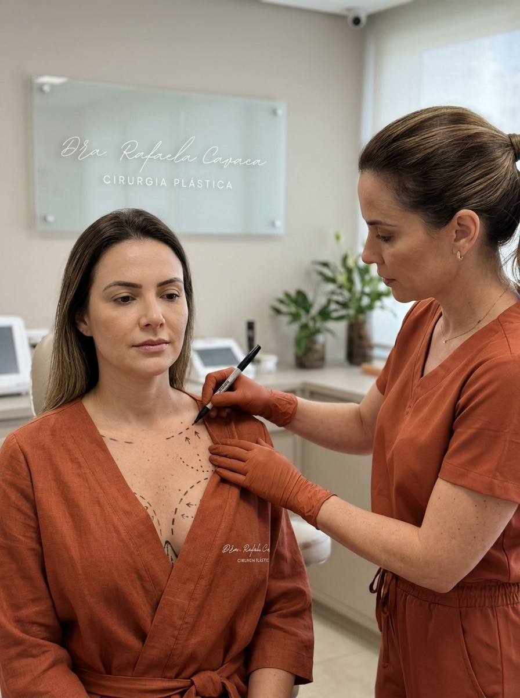
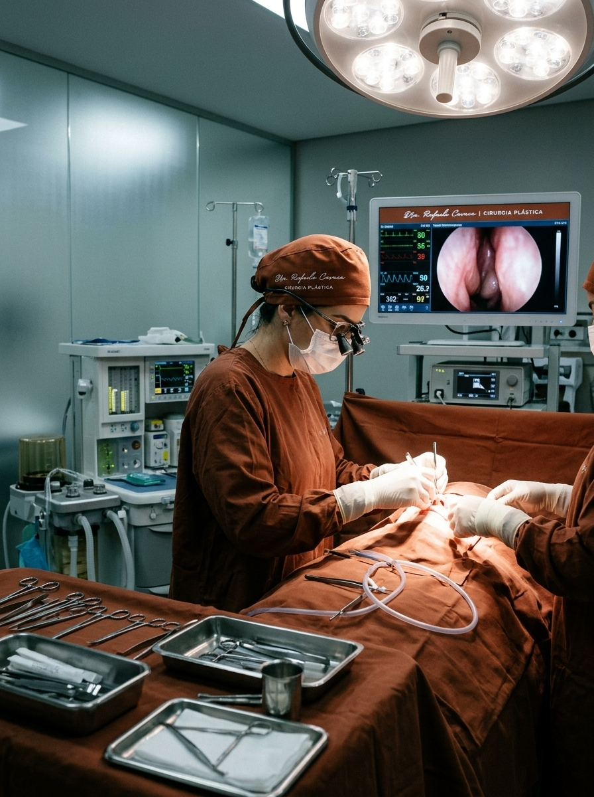
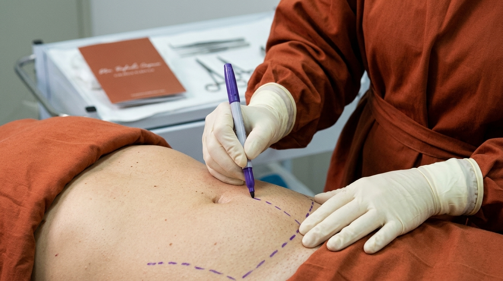

Cirurgia plástica de precisão milimétrica e elegância atemporal no coração dos Jardins.
Solicitar Avaliação Role para explorar ↓"A verdadeira sofisticação reside naquilo que não precisa ser anunciado. Minha arte cirúrgica não transforma quem você é; ela apenas revela, com discrição e rigor milimétrico, a sua forma mais refinada e autêntica."
— Dra. Rafaela Cavaca
Situado em um dos endereços mais nobres dos Jardins, o consultório da Dra. Rafaela Cavaca redefine a experiência da cirurgia plástica contemporânea. Cada intervenção é tratada como uma obra de alta-costura cirúrgica, onde tecnologia tridimensional de vanguarda e sensibilidade anatômica convergem para desenhar contornos harmônicos e naturalmente elegantes.
Com sólida formação e constante atualização nos maiores centros de referência global, sua conduta rejeita excessos e padrões efêmeros. O foco absoluto é a longevidade estética: resultados indetectáveis aos olhos, estruturados sobre fundamentos de segurança inegociável e respeito integral à identidade de cada paciente.
Os números refletem uma jornada pautada pela segurança absoluta e dedicação incondicional.
Procedimentos conduzidos exclusivamente em centros hospitalares de padrão ouro internacional, com retaguarda anestésica sênior e protocolos rigorosos de assepsia e monitoramento.
Mapeamento biométrico e estudo individualizado da arquitetura corporal para assegurar que cada ângulo dialogue em perfeita proporção áurea com sua anatomia natural.
Suporte pós-operatório contínuo, discreto e centrado na paciente, com gerenciamento refinado da cicatrização e visitas domiciliares especializadas sob demanda.
Nossa clínica não foi projetada para impressionar pelas aparências, mas para oferecer um ambiente de profunda serenidade, sigilo e exclusividade.
Instalada estrategicamente na Rua Padre João Manuel, no coração dos Jardins, nossa estrutura foi concebida para ser uma pausa necessária na rotina. Um refúgio acústico e visual de privacidade absoluta, onde cada decisão sobre seu futuro estético é amadurecida em ritmo sereno, longe de fluxos impessoais e da pressa das clínicas convencionais.

Consulta de imersão clínica, análise global dos tecidos, projeção volumétrica digital e elaboração de um dossiê cirúrgico confidencial.
Ato operatório conduzido com maestria técnica e tecnologia cirúrgica de última geração em hospital de excelência, assegurando conforto absoluto.
Cuidado intensivo continuado, drenagem linfática médica especializada e gestão silenciosa da cicatrização para um resultado impecável.

Lipoescultura de precisão e transição suave, delineando sombras e relevos com máxima harmonia visual.

Inclusão de próteses com planejamento milimétrico de colo, sustentação duradoura e naturalidade tátil.

Abdominoplastia de definição suave, reconstrução da cinta muscular interna e transição umbilical indetectável.

Elevação e reposicionamento tecidual com cicatrizes discretas e preservação da arquitetura mamária jovem.

Lapidação refinada dos contornos nasais em equilíbrio simétrico e funcional com os traços nobres da face.
Dê o primeiro passo em direção à sua melhor versão.
Solicitar Dossiê
Por respeito à privacidade de nossas pacientes, os resultados de antes e depois são mantidos em uma galeria restrita, acessada mediante cadastro.
"A discrição da Dra. Rafaela e o cuidado com cada milímetro do meu pós-operatório foram incomparáveis. Ninguém percebe que fiz cirurgia, apenas comentam como estou radiante e descansada."
"Desde o primeiro momento no consultório dos Jardins, entendi o que significa medicina de alto padrão. Clareza, elegância nos apontamentos e uma cirurgia de recuperação impecável."
"Buscava há anos uma profissional que compreendesse a beleza atemporal, sem exageros. O resultado foi muito além das expectativas: proporção precisa e naturalidade absoluta."
"A discrição da Dra. Rafaela e o cuidado com cada milímetro do meu pós-operatório foram incomparáveis. Ninguém percebe que fiz cirurgia, apenas comentam como estou radiante e descansada."
"Desde o primeiro momento no consultório dos Jardins, entendi o que significa medicina de alto padrão. Clareza, elegância nos apontamentos e uma cirurgia de recuperação impecável."
"Buscava há anos uma profissional que compreendesse a beleza atemporal, sem exageros. O resultado foi muito além das expectativas: proporção precisa e naturalidade absoluta."
Uma reflexão aprofundada sobre a estética indetectável e a busca por intervenções que preservam a nobreza e a autenticidade dos traços individuais.
Arquitetura CorporalComo a escolha do plano anatômico e da volumetria sob medida garantem estabilidade estrutural e caimento natural ao longo das décadas.
Recuperação de Alta PrecisãoOs pilares da tecnologia de ponta e do acompanhamento humanizado dedicados a abreviar o retorno à rotina com elegância e serenidade.
Filosofia EstéticaUma reflexão aprofundada sobre a estética indetectável e a busca por intervenções que preservam a nobreza e a autenticidade dos traços individuais.
Arquitetura CorporalComo a escolha do plano anatômico e da volumetria sob medida garantem estabilidade estrutural e caimento natural ao longo das décadas.
Recuperação de Alta PrecisãoOs pilares da tecnologia de ponta e do acompanhamento humanizado dedicados a abreviar o retorno à rotina com elegância e serenidade.
Para garantir o nível de dedicação exclusiva que nossa assinatura exige, mantemos nosso volume cirúrgico intencionalmente restrito.
Informações de Contato
(11) 91628-7180
R. Padre João Manuel, 450 - Conj 54/55 - 5º Andar - Jardins, São Paulo - SP, 01411-000